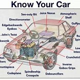

ABOUT CAR
A "car diet" refers to the conscious reduction or elimination of car usage in favor of alternative transportation methods.
This can involve limiting car trips to one day a week, using public transport, walking, biking, or carpooling, aiming to decrease reliance on cars.
The Low Car Diet, for example, is a challenge that encourages participants to limit their car usage for a period, often a month.

Sedan:
A four-door car with a traditional trunk.
Coupe:
Historically a two-door car, but can also refer to four-door cars or crossovers with low rooflines.
Sports Car:
Low-slung, sleek, and often designed for performance.
SUV:
A versatile vehicle with a higher ground clearance and more cargo space.
Lamborghini
lamborghini's refers to its use of lightweight materials, particularly carbon fiber, to reduce the weight of its cars. This is done to improve performance, fuel efficiency, and reduce emissions. Forged composite carbon fiber is a key part of this strategy.
Jeep
The Jeep can refer to two things: a specific weight loss plan and a camping gear set. The weight loss plan, popularized by Jared Fogle, focuses on eating Subway sandwiches. The camping gear set, also called "Travel Camping Diet Gear," is a practical and versatile set designed for Jeep enthusiasts who enjoy outdoor adventures, according to Jeep India.
Bugati
The Bugatti refers to the weight-saving measures taken on Bugatti models like the Chiron Sport to improve performance. This involves using lighter materials like carbon fiber for various components, resulting in a significant weight reduction. Specifically, the Chiron Sport's 18 kg (40 lb) reduction is achieved through lightweight wheels, carbon parts, and a lighter rear window.